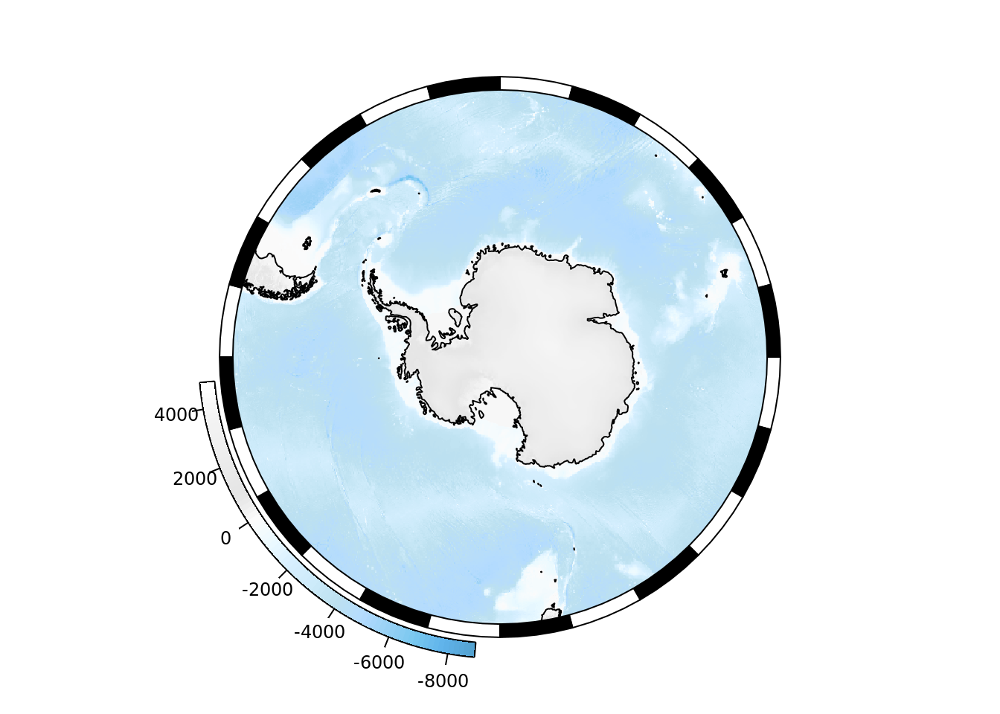
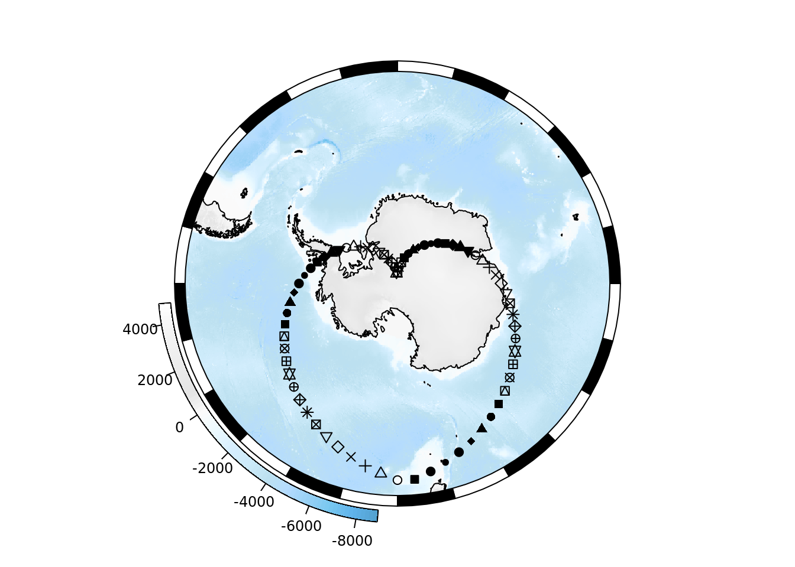
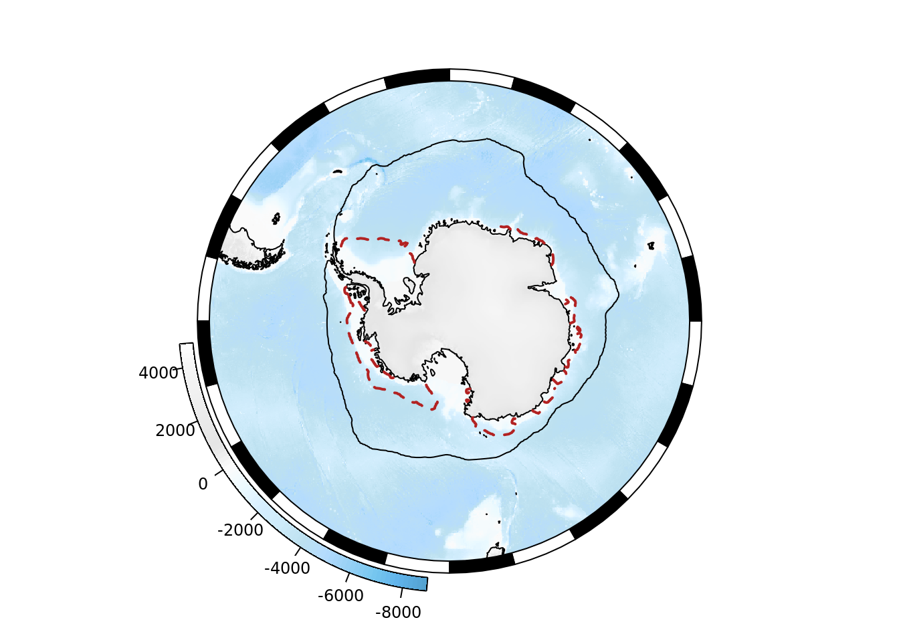
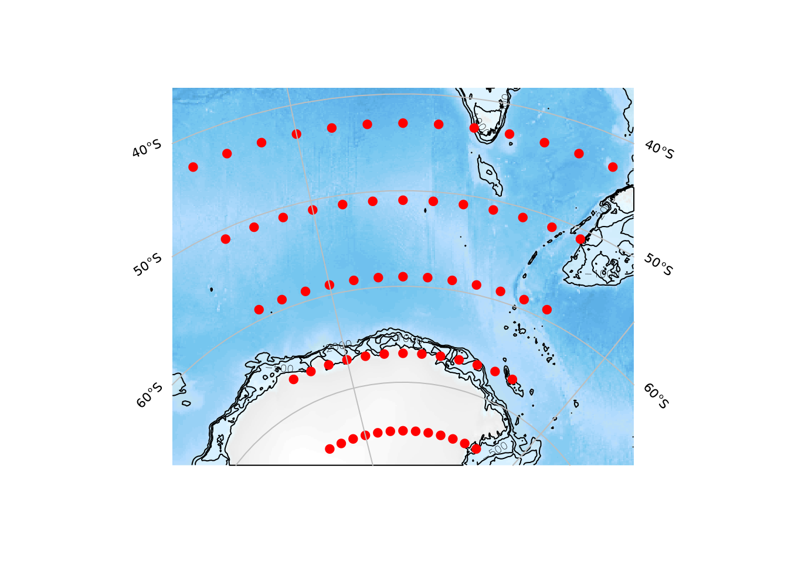
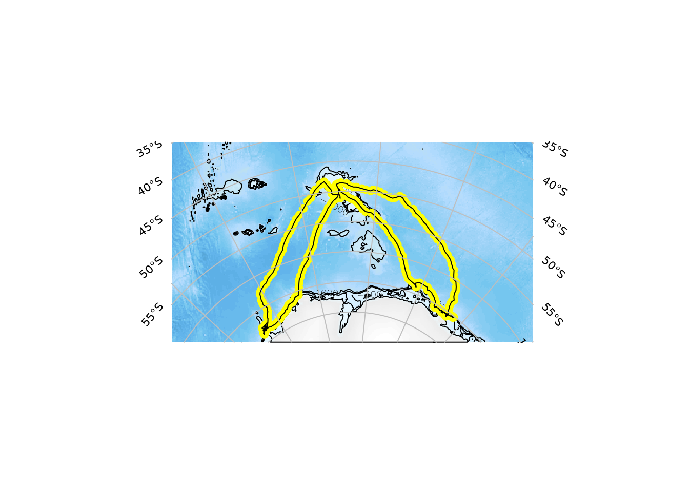
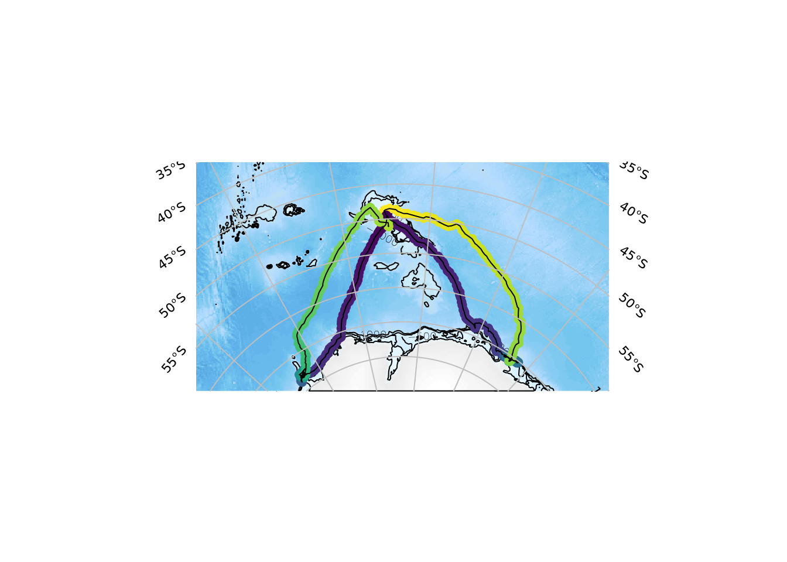

Polar maps are still hot!
Last time we got this far by creating a very simplistic polar map and discussing some of the difficulties in customizing and finishing it. Since then Dale Maschette discussed these problems at useR Brisbane 2018 and stirred up multiple discussions on twitter about the joys of polar maps.
Behold SOmap.
SOmap
To install the SOmap package use
remotes::install_github("AustralianAntarcticDivision/SOmap")and see the package readme and documentation for further details.
Creating a polar map is as easy as the following.
library(SOmap)## Loading required package: raster## Loading required package: sppmap <- SOmap()## Loading required namespace: rgeospmap
To add our own data to the map we can use the SOplot() function, by default this function is geared to adding data to our existing map.
pmap
longitudes <- seq(-180, 175, by = 5)
latitudes <- approx(c(-48, -88, -48), n = length(longitudes))$y
SOplot(longitudes, latitudes, pch = 1:25)## No projection provided, assuming longlat
The great feature here is that we only needed our data, points in longitude and latitude and a single call to SOplot() - the data is automtically added to the plot in the right way.
We can also add spatial types to the plot.
To start afresh from SOmap() above we can print() the object.
print(pmap)
SOplot(SOmap_data$seaice_oct)
SOplot(SOmap_data$seaice_feb, col = "firebrick", lwd = 2, lty = 2)
In the previous post we had these desired features.
- a local, specific, extent (this is surprisingly difficult to get right)
- a “graticule”, i.e. lines of constant longitude and latitude
- other data on the map, again this can be suprisingly complicated
- labels
- aesthetics and scales for the data on the map
- accoutrements (scale bars and north arrow and the fancy white-black margin real maps use)
The extent is controlled by the data we give SOauto_map(), this also adapts the map projection in use to best suit the data given.
grid <- expand.grid(x= seq(105, 165, by = 5), y = seq(-75, -38, by = 8))
amap <- SOauto_map(grid$x, grid$y)By default, the input data are plotted as points and as joined lines. The lines don’t make sense here, so turn them off.
(amap <- SOauto_map(grid$x, grid$y, input_lines = FALSE))
As well as our very contrived set of grid points, more realistic data works as well.
track <- SOmap::SOmap_data$mirounga_leonina
trackmap <- SOauto_map(track$lon, track$lat, pcol = "yellow")
trackmap
While SOplot() provides the arguments for the plot method in use, SOmap() and SOauto_map() provide special argumens that match their base equivalents for points and lines, i.e. pcol and lcol respectively.
We see immediately that the seal heading west raced home somewhat more quickly than its easterly counterpart.
SOauto_map(track$lon, track$lat, pcol = colourvalues::colour_values(track$date))
library(dplyr)##
## Attaching package: 'dplyr'## The following objects are masked from 'package:raster':
##
## intersect, select, union## The following objects are masked from 'package:stats':
##
## filter, lag## The following objects are masked from 'package:base':
##
## intersect, setdiff, setequal, uniontrack %>% group_by(id) %>%
summarize(start = min(date), end =max(date), west = min(lon), east = max(lon))## # A tibble: 2 x 5
## id start end west east
## <chr> <dttm> <dttm> <dbl> <dbl>
## 1 ct96-05-13 2013-03-15 11:21:41 2013-09-18 16:44:36 69.7 116.
## 2 ct96-09-13 2013-03-06 23:01:11 2013-08-24 23:37:25 31.3 70.6Next steps
…
Twitter
Google+
Facebook
Reddit
LinkedIn
StumbleUpon
Email